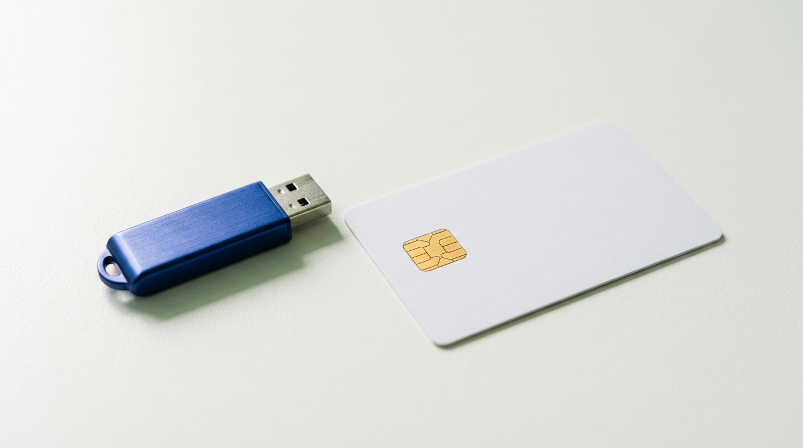
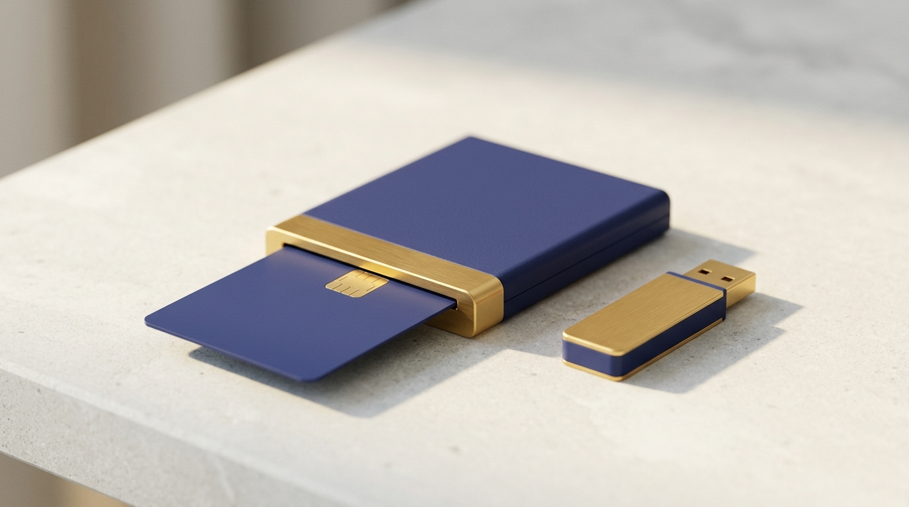
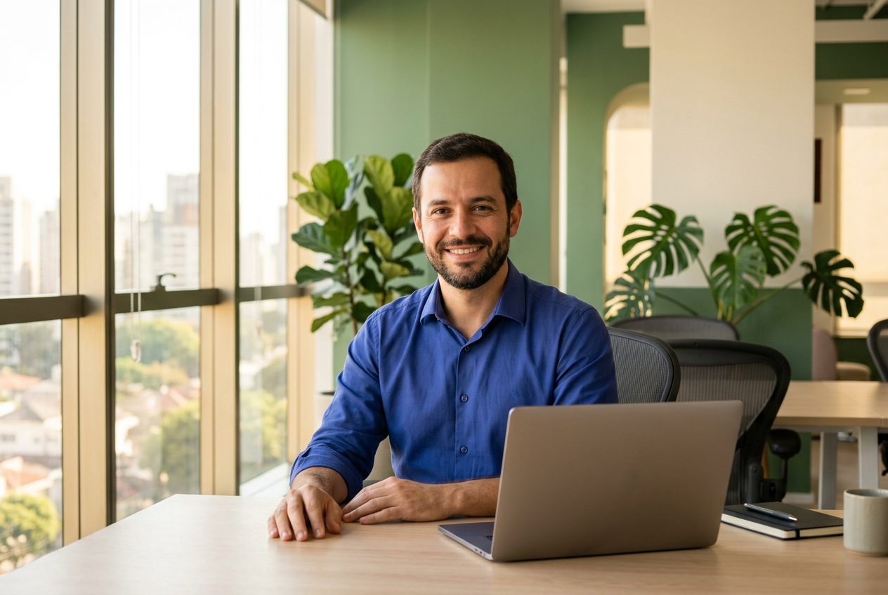

A1 Pessoa Física (e-CPF A1)
Arquivo digital instalado direto no computador. Validade de 1 ano. Ideal para assinar documentos com validade jurídica, enviar Imposto de Renda e acessar portais como e-CAC e Gov.br com praticidade.
Certificados e-CPF e e-CNPJ nos modelos A1 e A3 com validade jurídica em todo o Brasil. Nossa equipe confere sua documentação pelo WhatsApp e acompanha você na validação online.
Trabalhamos com as quatro modalidades oficiais. Selecione abaixo o modelo que o seu contador ou rotina pede e agende direto com a equipe.
Arquivo digital instalado direto no computador. Validade de 1 ano. Ideal para assinar documentos com validade jurídica, enviar Imposto de Renda e acessar portais como e-CAC e Gov.br com praticidade.
Arquivo digital instalado no computador ou integrado ao sistema emissor. Validade de 1 ano. Recomendado para empresas que emitem notas fiscais eletrônicas diariamente e precisam de agilidade na rotina contábil.

Armazenado em mídia física (token USB ou cartão inteligente). Validade de 1 a 3 anos. Indicado para profissionais liberais, advogados, médicos e quem prefere um prazo maior de validade em dispositivo dedicado.

Armazenado em token USB ou cartão inteligente. Validade de 1 a 3 anos. Indicado para sócios e representantes legais que buscam ciclo longo de renovação e controle de uso em mídia física exclusiva.
Os dois modelos têm a mesma validade jurídica oficial ICP-Brasil. O que muda é onde o certificado fica guardado e o tempo de renovação.
Instalado diretamente no computador ou no sistema emissor de notas fiscais.
Gravado em dispositivo físico dedicado, como token USB ou cartão inteligente.
Validade fixa de 1 ano, ideal para quem busca custo inicial enxuto e agilidade.
Pode ser emitido com validade de 1 a 3 anos, reduzindo a frequência de renovação.
Funciona direto no computador e nos sistemas de nota fiscal sem precisar conectar aparelhos.
Exige conectar o token USB ou a leitora de cartão a cada assinatura ou acesso.
Se o seu contador ou sistema pediu um modelo específico e você não tem certeza de qual é, nossa equipe confirma para você no WhatsApp.
O sócio entra na videoconferência de onde estiver. Você acompanha tudo pelo WhatsApp.
Valide seu e-CNPJ A1 ou A3 direto da sua loja ou escritório e comece a emitir notas no mesmo dia.
Assine prontuários, petições, projetos e laudos com validade jurídica em todo o território nacional.
Mesmo morando fora do Brasil, você realiza a validação online por chamada de vídeo com suporte em português.
Unimos os padrões técnicos exigidos nacionalmente com um atendimento próximo, que fala a sua língua.

Assinaturas eletrônicas com o mesmo valor legal de uma assinatura presencial reconhecida em cartório.
Conferimos toda a documentação antes da videoconferência para que sua validação ocorra de primeira, sem travas.
Nada de ficar preso em menus automáticos. Você conversa com especialistas reais pelo WhatsApp.
Validação conduzida dentro das normas oficiais de segurança e criptografia da certificação digital.
Separamos os pontos principais sobre documentos, renovação e escolha de mídia para você já ir preparado.
Para Pessoa Física (e-CPF), documento oficial com foto (CNH ou RG atualizado) e CPF. Para Pessoa Jurídica (e-CNPJ), o documento com foto do responsável legal na Receita Federal, o ato constitutivo atualizado (Contrato Social, Requerimento de Empresário ou Estatuto) e o cartão CNPJ.
Apenas um celular ou computador com câmera, microfone e acesso à internet, além do seu documento de identificação original em mãos.
Sim. Atendemos primeira emissão e renovação para todos os modelos (A1 PF, A1 PJ, A3 PF e A3 PJ) por videoconferência.
Se você já tiver um token ou cartão compatível, a emissão também é concluída remotamente após a videoconferência. Se precisar adquirir a mídia física, nossa equipe combina o envio ou a entrega diretamente pelo WhatsApp.